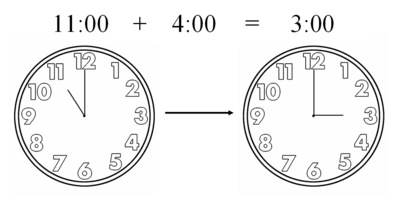

6 Modular arithmetic I
To begin the second part of this challenge, we’ll take a brief look at modular arithmetic. This is the same thing as regular arithmetic, but with one twist: we only care about the remainder when dividing by some number \(n\).
Instead of talking about numbers, we talk about numbers modulo \(n\). For example, \(5 \bmod 3 = 2\), because the remainder when dividing \(5\) by \(3\) is \(2\). In fact, you already know how to do this:

When we tell the time we implicitly work in arithmetic modulo 12, which is why we know that 3pm is 4 hours after 11am. Modular arithmetic can also be thought of as performing the same operation on clocks with a different number of hours to 12.
Going back to the example above, \(5 \bmod 3 = 2\), we see also that \(8 \bmod 3 = 2\); so \(5\) and \(8\) are equivalent, or congruent, modulo \(3\).
Essentially, \(a\) and \(b\) are congruent modulo \(n\) if \(a\) and \(b\) have the same remainder when divided by \(n\).
This is often denoted as:
\[5 \equiv 8 \bmod 3.\]
We can insert any other expressions we like in here, as well:
\[1 + 4 \equiv 4 \times 2 \bmod 3.\]
Another way of thinking about this is that integers ‘wrap around’ back to 0 after reaching \(n - 1\). So, when counting modulo \(3\), instead of \[0, 1, 2, 3, 4, 5, 6, 7, 8, \ldots\] we have: \[0, 1, 2, 0, 1, 2, 0, 1, 2, \ldots\]
Because \(5\) and \(8\) both ‘become’ the same number, they are congruent modulo \(3\).
Question: Consider some other areas in life where we use modular arithmetic without thinking about it.
What day of the week will it be, five days from now?
If you need to wake up at 7 am and you need 8 hours’ sleep, what time do you need to sleep?
Can you express these relations using modular arithmetic?
6.1 Calculator
To help you get a feel for modular arithmetic, here is a calculator that accepts (almost) any mathematical expression in the left-hand side. You can also specify a modulus, and the calculator will show you the result of the expression modulo that number. You may find this useful for the exercises below.
mod
6.2 Exercises
Suppose that \(a \equiv p \bmod n\) and \(b \equiv q \bmod n\). Prove the following statements:
- \((a + b) \equiv (p + q) \bmod n\).
- \((ab) \equiv (pq) \bmod n\).
We will work through the first one. To do this proof, we need to use one key fact: if \(a \equiv p \bmod n\), that means that there is some integer \(k\) for which \(a = p + cn\). In other words, \(a\) is some multiple of \(n\) plus \(p\).
If we do this separately for \(a\) and \(b\): \[\begin{align} a &= p + cn \\ b &= q + dn \end{align}\]
and then add these two together, we get:
\[\begin{align} a + b &= p + q + cn + dn \\ &= p + q + (c + d)n \end{align}\]
which means that \(a + b\) is some multiple of \(n\), plus \(p + q\). This is exactly the same as saying \((a + b) \equiv (p + q) \bmod n\).
You can use the same strategy to prove statement (2).
Optional: If you have studied proof by induction, try using it to show that for all integers \(m > 0\), \((a^m) \equiv (p^m) \bmod n\).
6.3 Applications
These equalities make it far easier to perform some calculations. For example, what is \(33^{594} \bmod{32}\)?
We might first think about calculating \(33\) to the power of \(594\), and then dividing that by \(32\) to find the remainder. That sounds difficult: even a computer would struggle with such a large number! (Try using the calculator above, or Google’s built-in calculator, to calculate \(33^{594}\).)
But if we notice that \(33 \equiv 1 \bmod{32}\), then we can use formula (3) to see that
\[33^{594} \equiv 1^{594} \equiv 1 \bmod{32},\]
because \(1\) to the power of anything is still \(1\).
Challenge: Calculate \(7^{175} \bmod{16}\).
[If you are having trouble, try to find a pattern here: what is \(7^1 \bmod 16\)? and \(7^2 \bmod 16\)? and \(7^3 \bmod 16\)? Once you have found a pattern, think about why this might be the case. Can you use, for example, statement (3) above, noting that \(7^{(am)} = (7^a)^m\)?]